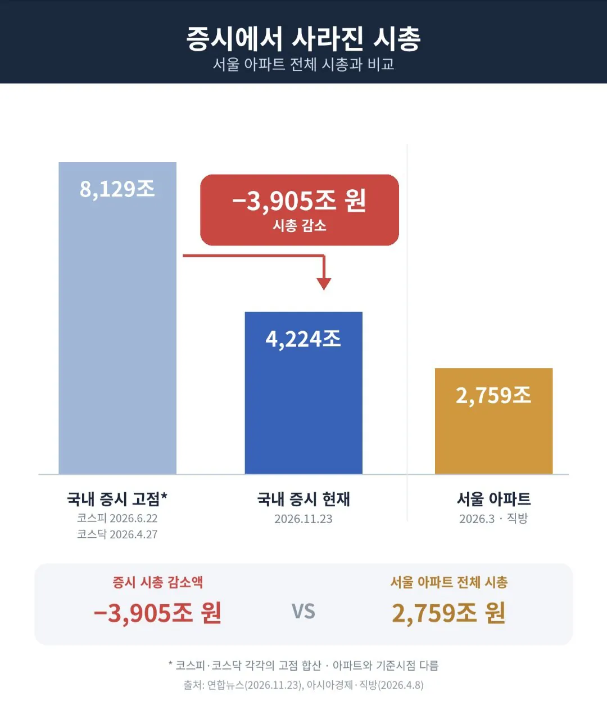

26년 고점대비 현재 증시에서 사라진 시총
> 서울 아파트 전체 시총
서울 아파트를
다 사고도 남는 금액이
공중분해됨ㄷㄷㄷ

26년 고점대비 현재 증시에서 사라진 시총
> 서울 아파트 전체 시총
서울 아파트를
다 사고도 남는 금액이
공중분해됨ㄷㄷㄷ
국민연금 주동자들은 나중에 크게 털릴거같음ㅋㅋ 거의 경제계엄급인데 항명 안했쥬?
외국인 살렸잖아 한잔해~
사라진다고 표현하는게 맞냐?ㅋㅋ 그럼 다시 오르면 서울 전체 아파트만큼 생기는거임?ㅋㅋ
그렇지..?
아파트 값 빠지면 아파트가 사라지는거임?
아파트를 살 만큼의 금액이 사라졌다고 했지 아파트가 사라졌다고는 안했는데
어...이게맞냐 ㅋㅋ
삼하는 환상이란 말인가
아파트 시총을 2배 올리면 해결
분해라니 외인형님들의 피와 살이 됐을 뿐이다
삼하로 인한 빈부격차 주식으로 정상화 된 건가 😏
그 많은 돈이 그럼 다 어디로 갔단말이냐!
암튼 외국인들이 빨아갔답니다~~
지금이니?
진짜 최악의 판단중 하나
개미랑 외국인을 조져야지 외인만 살림
공중분해 x
외인들 배불려주기 o
국민이 원해던 세상 오홍홍
부의 이동 ㅋㅋ
100원이 200원 되었다가 다시 100원되면 원위치지 사라진게 아니지
오를 때 아가리 털던 애들 ㅇㄷ?
난 그때도 가즈아 외치고 6월에 털었디